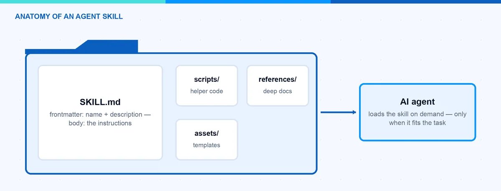
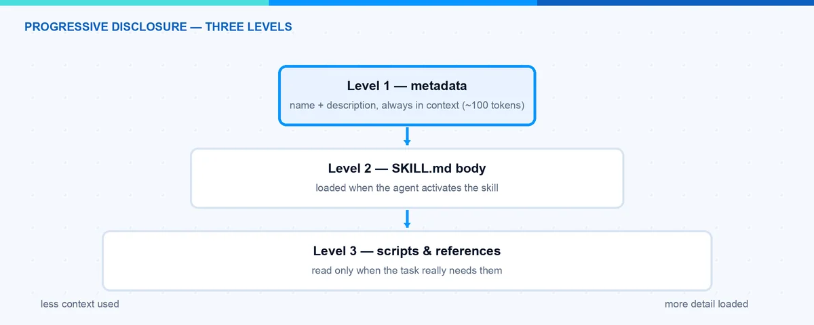
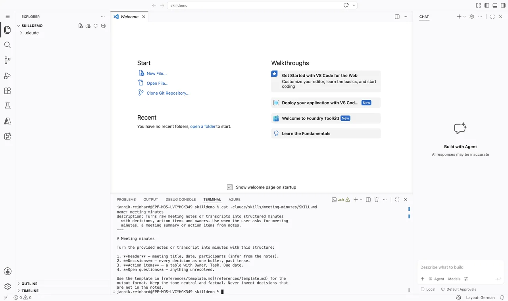

Agent Skills Explained: How to Build Your First Skill
Every AI agent is only as good as the knowledge you give it. For a long time the common answer was to stuff everything into one giant system prompt. This does not scale. Agent Skills solve this problem in a much cleaner way. In this blog post I explain what Agent Skills are, why they beat the big system prompt, and how you can build your first skill step by step. At the end you will have a small working skill that runs in Claude Code and in many other AI tools.
What Are Agent Skills?
An Agent Skill is, at its core, just a folder. The folder contains one required file called SKILL.md and, if you want, extra scripts and reference documents. The SKILL.md file has two parts. A short YAML frontmatter tells the agent what the skill does and when to use it. The Markdown body tells the agent how to do the task. The agent only keeps the frontmatter in context. The rest is loaded on demand when a task matches.
The pattern was introduced by Anthropic for Claude in October 2025. Shortly after, in December 2025, Anthropic published it as an open standard at agentskills.io. Since then the adoption has moved very fast. Tools like OpenAI Codex, GitHub Copilot, Cursor, Gemini CLI and many more support the same format today. This is the nice part: you write a skill once and you can reuse it across different agents.

Why Are Agent Skills Better Than a Big System Prompt?
The magic phrase is progressive disclosure. The idea is simple: give the agent only the information it needs right now, not everything at once. Agent Skills work in three levels:
- Metadata (about 100 tokens per skill). At startup the agent loads only the name and the description of every installed skill. This is like the table of contents of a book.
- Instructions (recommended under 5,000 tokens). When a task matches the description, the agent reads the full SKILL.md body. This is like opening one chapter.
- Resources (as needed). Scripts and reference files are loaded only when the agent really needs them. This is like the appendix at the end of the book.
Now compare this with a system prompt that carries every instruction for every possible task. The context window is limited, and every token costs money and attention. Even worse, instructions that are not relevant for the current task distract the model and make the results worse. With skills, a large reference document costs nothing until the moment the agent opens it.

How Is a Skill Structured?
The structure of Agent Skills is defined in the open specification and it is very small. A skill is a directory that contains at least a SKILL.md file:
my-skill/
âââ SKILL.md # Required: metadata + instructions
âââ scripts/ # Optional: executable code
âââ references/ # Optional: extra documentation
âââ assets/ # Optional: templates and resourcesThe frontmatter of SKILL.md has only two required fields:
- name: Maximum 64 characters. Only lowercase letters, numbers and hyphens. It must not start or end with a hyphen, must not contain two hyphens in a row, and it must match the folder name.
- description: Maximum 1024 characters. It should describe what the skill does and when the agent should use it.
There are also a few optional fields:
- license: The license of the skill, or a pointer to a bundled license file.
- compatibility: Up to 500 characters for environment requirements, for example âRequires git and dockerâ. Most skills do not need it.
- metadata: A free key-value map, for example for an author or a version.
- allowed-tools: A space-separated list of tools the skill is pre-approved to use, for example
Bash(git:*) Read. This field is still marked experimental in the specification, so support varies between agents. Claude Code already supports it: the listed tools run without a permission prompt while the skill is active.
The body below the frontmatter is plain Markdown with no format restrictions. The specification recommends to keep SKILL.md under 500 lines and to move long details into separate reference files. When you link those files, use relative paths from the skill root and keep them one level deep â no long reference chains.
Note: The description is the most important line of the whole skill. The agent decides only based on this text if the skill is relevant for the current task. A description like âHelps with PDFsâ is too vague. Write what the skill does and when to use it, and include the keywords a user would say.
Where Do Skills Live?
Every tool that supports the standard documents its own skill directories, but the format inside is identical. In Claude Code there are three main places:
- Personal skills live in
~/.claude/skills/<skill-name>/. They are available in all your projects. - Project skills live in
.claude/skills/<skill-name>/inside the repository. They are available for everyone who works in that project, and you can version them in git together with the code. - Plugin skills ship inside a plugin under
<plugin>/skills/<skill-name>/and are available where the plugin is enabled.
If two skills share the same name, the more specific level wins, and plugin skills are namespaced as plugin-name:skill-name so they never conflict. You can also invoke a skill directly by typing /skill-name, and the /skills menu shows everything that is installed. Changes to a SKILL.md are picked up live, so you can edit and test without restarting the session.
How Can I Build My First Skill?
Let us build a small but useful example: a skill that turns raw meeting notes into clean meeting minutes. You do not need any framework for Agent Skills, only a text editor. I use Claude Code here, but the same folder works in every tool that supports the standard.
- Create the skill folder. Create a folder with the name of your skill in your personal skills directory:
mkdir -p ~/.claude/skills/meeting-minutes- Create the SKILL.md file. Add the frontmatter with
nameanddescription, and write the instructions in the body. This is already a complete, valid skill:
---
name: meeting-minutes
description: Turns raw meeting notes into clean, structured meeting
minutes. Use when the user asks to summarize a meeting, write
minutes, or clean up meeting notes.
---
# Meeting Minutes
Follow these steps to create the minutes:
1. Read the raw notes the user provides.
2. Extract the date, the participants, and the topic.
3. Group the content into: Decisions, Open Points, Action Items.
4. Every action item needs an owner and a due date. Ask the user
if one is missing.
5. Use the template in references/template.md for the output.- Add a reference file (optional). Create
references/template.mdwith your output template. The agent will only load this file when it really creates the minutes. This keeps the main skill lean. The finished folder looks like this:
meeting-minutes/
âââ SKILL.md
âââ references/
âââ template.md
- Test the skill. Start a new agent session and give it a matching task, for example: âCan you turn these notes into meeting minutes?â. The agent sees the description, activates the skill and follows your instructions. If the skill does not trigger, sharpen the description with more concrete keywords.
- Validate the skill (optional). The specification project provides a small reference tool that checks the frontmatter and the naming rules:
skills-ref validate ./meeting-minutesThat is all. Your first skill is done. From here you can grow it: add a script to scripts/ for a step that should run as code, or split long instructions into more reference files.
Hint: Start small. One skill should solve one job. If your SKILL.md grows and grows, that is usually a sign that you should split it into two skills or move content into the references folder.
Which Pitfalls Should I Avoid?
I made most of these mistakes myself, so here is an honest list:
- A vague description. This is by far the number one reason a skill does not trigger. The agent never reads your great instructions because the description did not sound relevant. Rewrite it with the words a user would actually type.
- Name and folder do not match. The
namefield must match the directory name. If they differ, validation fails and some tools will not load the skill. - Everything in one SKILL.md. Once the skill is activated, the whole body goes into context. A 2,000-line SKILL.md destroys the token advantage. Keep the body short and push details into
references/. - Expecting deterministic triggering. Skill activation is a model decision, not a rule engine. Two similar skills with overlapping descriptions will compete, and sometimes the wrong one wins. Keep the descriptions clearly separated, and remember you can always invoke a skill explicitly.
- Forgetting that scripts are code. A skill can contain scripts that the agent executes on your machine. Treat installing a foreign skill like installing software: read the SKILL.md and the scripts before you trust it.
- Using a skill for the wrong job. A skill carries knowledge and workflows. It does not give the agent new access to live systems â no credentials, no sessions. For that you need a CLI tool or MCP.
I wrote before about why CLI tools are beating MCP for AI agents. The core argument was context efficiency: MCP tool definitions eat a lot of the context window before the agent has done anything. For me, skills are the third piece of the same picture. CLI tools give the agent capabilities. MCP connects the agent to live services. Agent Skills package the knowledge and the workflows: how your team does things, which conventions apply, which steps to follow. If you want the full map of these building blocks, I put them together in my post about the AI tooling surface in 2026.
In this blog post I explained what Agent Skills are, why progressive disclosure beats a giant system prompt, and how you build your first skill with a simple SKILL.md file. Because the format is an open standard now, the skill you wrote today will very likely still work in the tools you use tomorrow. A good next step is the official Agent Skills documentation from Anthropic and the specification itself. I hope this is a little help.
Stay healthy, Cheers Jannik